Projects
Low-Cost 3D Seafloor Mapping Robot
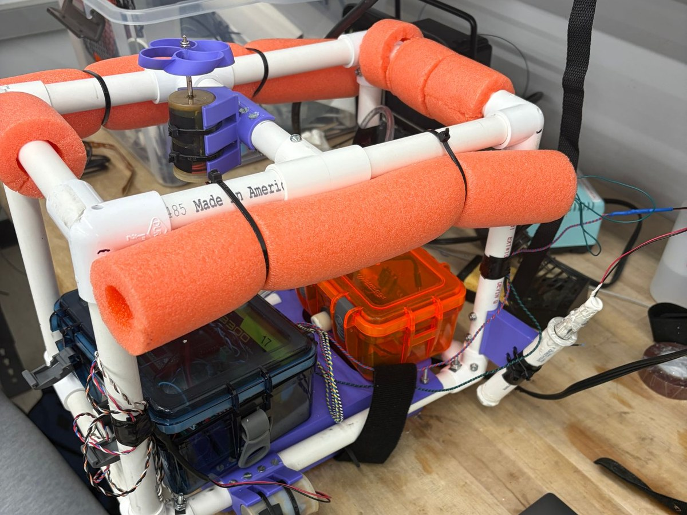
Role: Project Lead, Harvey Mudd E80 | January 2026 – June 2026
Overview:
Seafloor mapping usually relies on sonar from research ships, which can cost around $35,000 a day.
I led a four-person team that built an autonomous underwater vehicle (AUV) to map shallow seafloor
terrain with lasers and a camera instead, on a $50 budget. A Raspberry Pi camera captures up to
4 photos per second of a blue laser dot and a green laser grid. Triangulating where those points land
gives distance and slope, which we turned into a 3D topographic map in MATLAB. The robot also logs
water temperature and pressure.
Skills:
Team Leadership, Laser Triangulation, Camera Calibration, Raspberry Pi, Teensy, Op-Amp Sensor Circuits,
MATLAB, Waterproofing, Field Testing
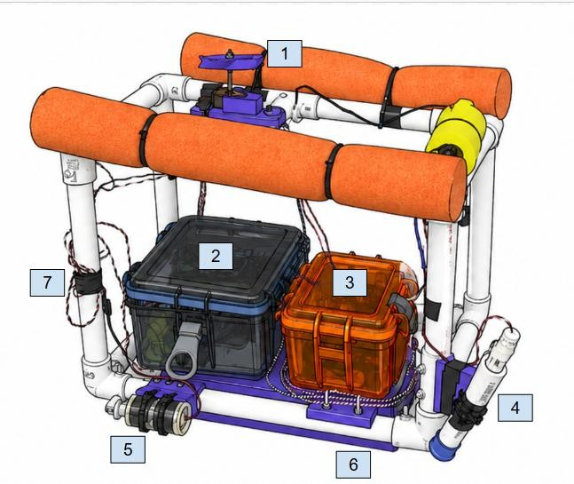
A PVC frame with foam floats, one vertical propeller for diving, and two horizontal propellers for steering. The blue box holds the sensor circuit board and battery, and the orange box holds the Pi, camera, and green laser. A 3D-printed ballast holder keeps the weights from shifting, and the blue laser sits in its own angled housing for depth triangulation.
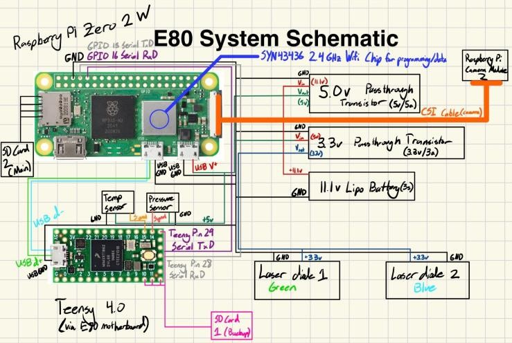
A Teensy 4.0 logs temperature (thermistor) and pressure (MPX5700) through op-amp circuits that we calibrated in the lab. A Raspberry Pi Zero 2 W runs the camera and lasers, all powered by an 11.1 V LiPo battery.
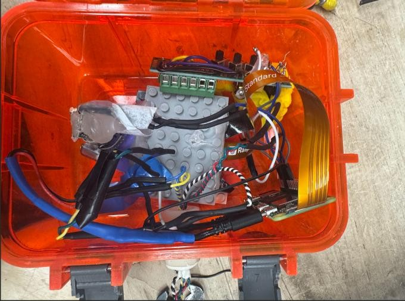
A waterproof box holds the Pi, camera, and a green laser with a diffraction grating that spreads it into a grid. We chose green and blue lasers because those wavelengths travel farthest through water. We calibrated the camera against a flat surface tilted from 0° to 45° to convert pixels to meters.
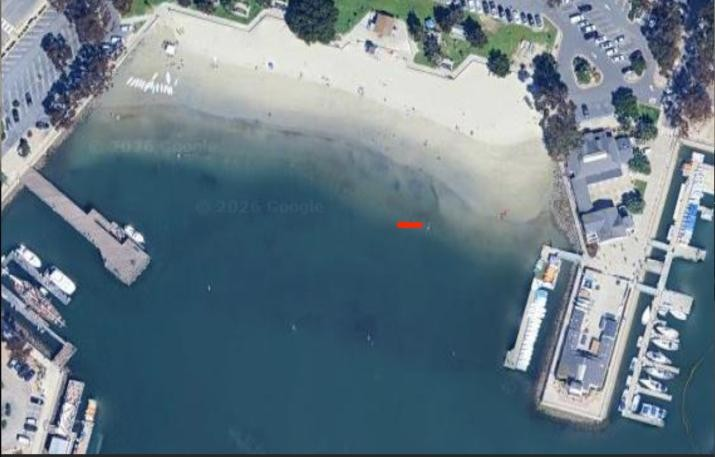
After test runs at a lake and a pool, we deployed at Dana Point, CA, on April 25, 2026 (path in red). Pool testing revealed a leak in the camera box at 1.5 m, so we reprogrammed the robot to cruise just below the surface. We also fixed a thrust imbalance between the two side motors that made the robot drift in circles.
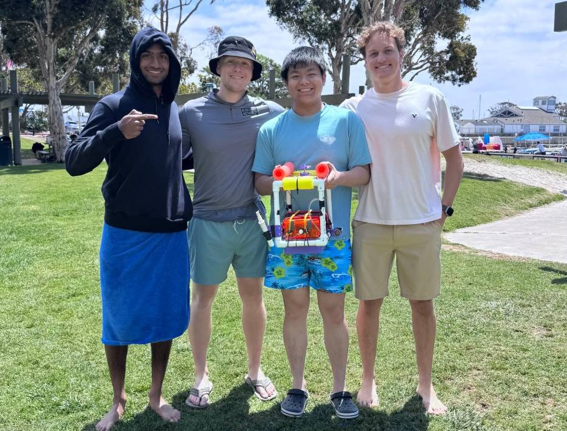
Our team with the robot at Dana Point after the final deployment.
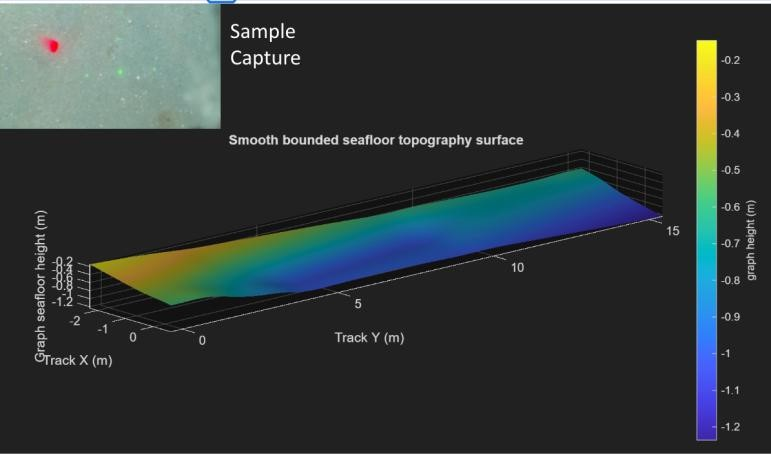
Our MATLAB map of a roughly 15 m track showed the seafloor reaching about 1.2 m deep. Temperature read about 6 °C high, likely from Raspberry Pi heat near the sensor board. Next steps: a laser that doesn't overheat, and GPS to tag each photo's location.
Boba Busters: Hydrogel Compression Tester
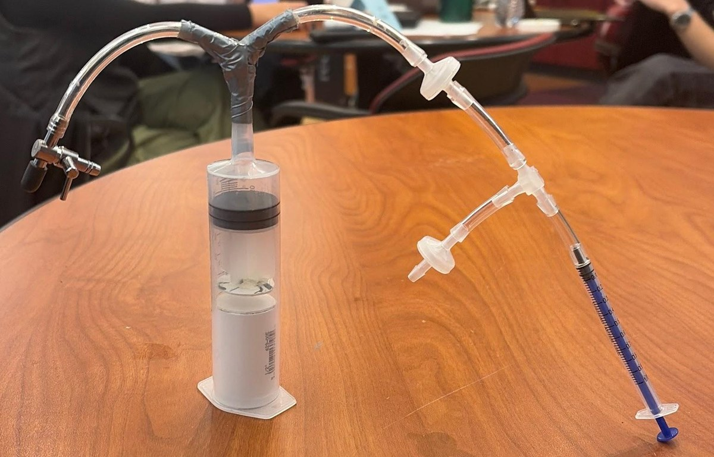
Role: Project Lead, Harvey Mudd E4 | September 2025 – December 2025
Overview:
A Harvey Mudd engineering professor who runs science outreach at local elementary schools asked
our four-person team for a hands-on way to teach 4th and 5th graders how hydrogels deform. Our
device, Boba Busters, uses a small 1 mL syringe to pump air into a clear 60 mL syringe, pushing a
plunger down onto a piece of popping boba (a cheap, food-safe hydrogel). Students track how much
air they've pumped in and read the boba's height off a millimeter scale until it pops.
Skills:
SolidWorks, Design for Cost, Prototyping, Experimental Design & Testing, Data Analysis, STEM Outreach
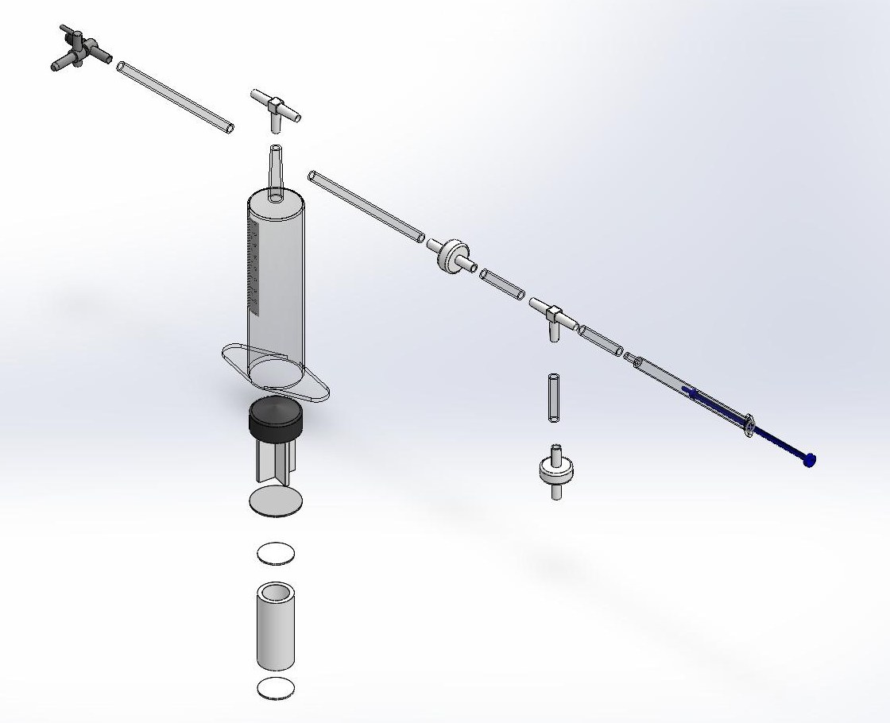
Modeled the full assembly in SolidWorks. Every part is off-the-shelf from Home Depot or Amazon (syringes, check valves, vinyl tubing, and a ½-inch PVC coupling as the boba stand), and a unit can be built with just scissors, tape, and hot glue, so teachers can make their own. The design is modular and waterproof: parts swap out easily, and the whole unit can be rinsed off.
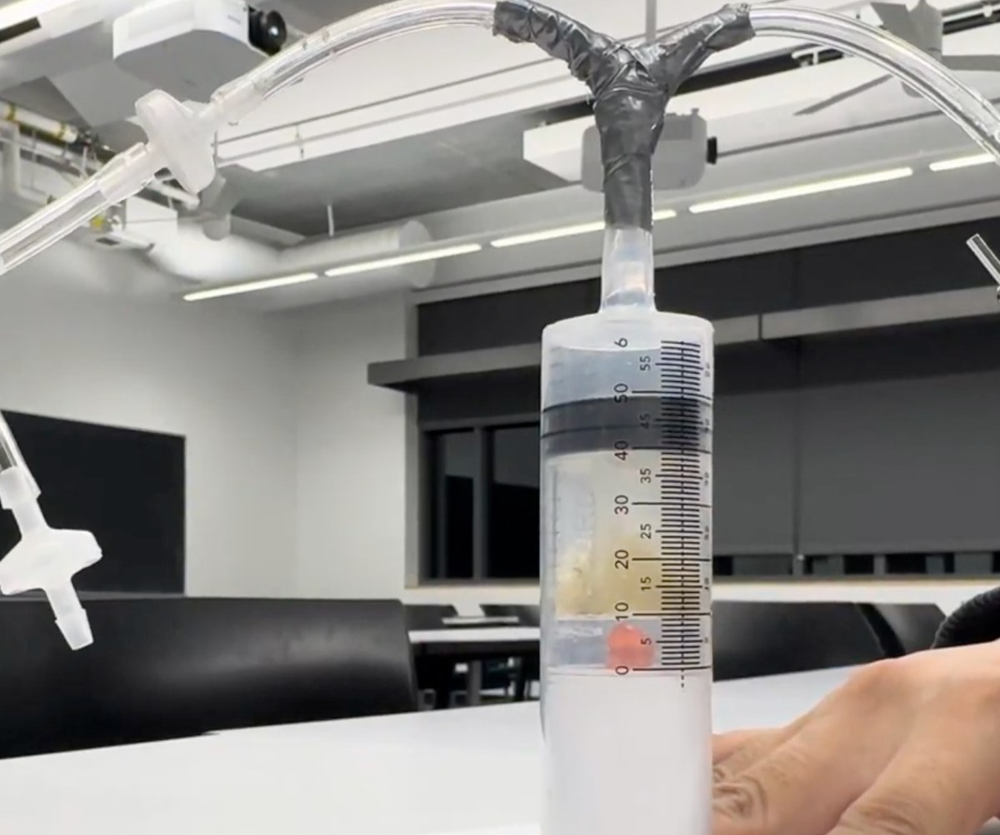
Ran three trials, pumping air until the boba popped. It took 12.5, 12, and 13 mL of air, a relative standard deviation of 4%, which met our "good consistency" target. Five first-time users rated ease of use 2.8 out of 3.
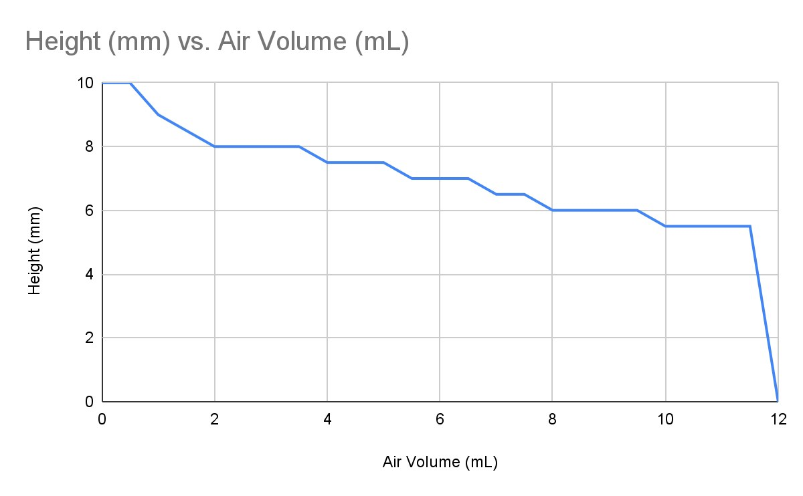
Example data a student would collect: the boba compresses gradually, then pops. The final cost was $11.26 per unit, under the $15 budget. Next steps: lubricate the plunger to reduce friction, and label the release valve, which confused one tester.